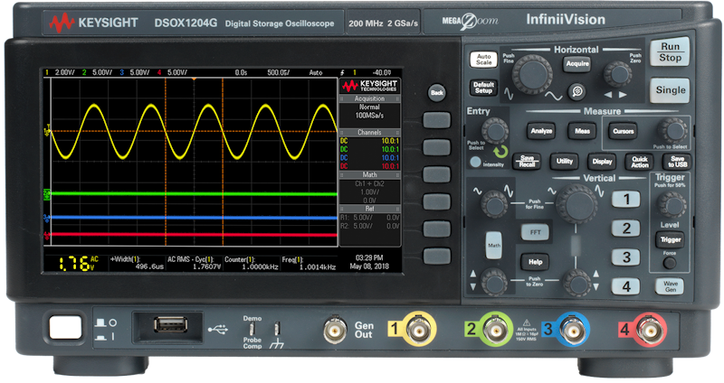
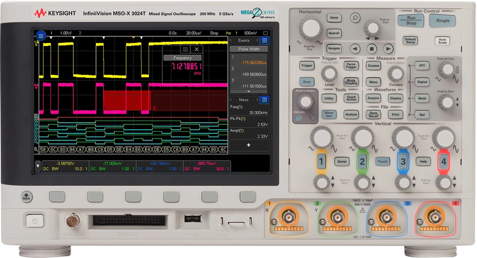
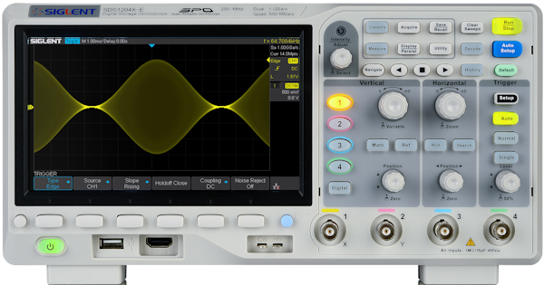
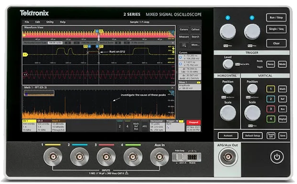

Oscilloscope (Scope)#
Instrument for all oscilloscopes
InstroScope provides a unified interface all oscilloscopes. This class is initialized with a vender-specfic driver (Keysight1200X, Tektronix2SeriesMSO,…), and provides the vendor-agnostic API (set_vertical_scale, fetch_waveform, measure, set_trigger_level, …).
Creating an InstroScope#
from instro.scope.drivers import Keysight1200X
from instro.scope import InstroScope
scope = InstroScope(
name="myScope",
driver=Keysight1200X("<visa_resource>"),
num_channels=4,
)
Supported Vendors#




If your vendor or model is not listed, see Custom Driver Development, or open a Driver Request issue on GitHub.
Example#
More examples found in Examples
Details#
The following presents details about the InstroScope. Specific driver details can be found in on their pages.
Driver Composition#
An InstroScope is built from a concrete driver:
InstroScope("name", driver=Keysight1200X("<visa_resource>"), num_channels=4)
Keysight1200Xowns the connection setup and vendor-specific command mapping.InstroScopeowns the category-level workflow: configuration tracking, acquisition control, measurements, waveform fetches, publishers, the background daemon.
Lifecycle#
Construct: instantiate the vendor driver and pass it to
InstroScope.open(): establish the VISA connection. When constructed from a config,open()also applies the configured state, resyncs the tracked state, and optionally starts acquisition.Configure: set vertical (per channel), horizontal, acquisition, and trigger settings.
Acquire: arm a single-shot with
single(), or free-run withrun().Read: fetch a waveform with
fetch_waveform()or take a built-in measurement withmeasure().close(): disconnect from hardware.
Acquisition Control vs. the Background Daemon#
InstroScope has two independent start/stop concepts:
Acquisition control drives the instrument:
run(),single(), andstop_acquisition(). These map to the front-panel Run, Single, and Stop keys. Aftersingle(), bothfetch_waveform()andmeasure()block up to theirtimeoutfor the trigger to fire, then read. They raiseTimeoutErrorif it does not.The background daemon drives polling on the host:
start()andstop()(inherited fromInstrument) periodically call the methods you register and stream their results to publishers.
Configuration Tracking#
InstroScope tracks vertical, horizontal, acquisition, and trigger state locally as you issue commands, in a ScopeState dataclass. Call sync_configuration() after open() (or after load_settings()) to bulk-query the instrument and overwrite the tracked state with what the hardware reports. Scopes snap requested values to the nearest supported step, so the tracked value can differ from what you asked for until you resync.
Note
sync_configuration() does not bulk-query trigger source, type, level, slope, or mode. Not all scopes expose those through a simple query, so set them explicitly to populate the tracked state.
Init from a Config File#
InstroScope can also be constructed directly from a JSON config file, which removes the need to write any Python setup code:
See Config Files for more info.
from instro.scope import InstroScope
scope = InstroScope(config="bench_scope.json")
Where bench_scope.json contains:
{
"version": 1,
"instrument": "InstroScope",
"device": {
"name": "bench_scope",
"description": "Bench oscilloscope",
"manufacturer": "Keysight",
"model": "DSOX1204A"
},
"driver": {
"connection_type": "visa",
"name": "Keysight1200X",
"num_channels": 4,
"visa": {
"visa_resource": "TCPIP0::192.168.1.50::INSTR"
}
},
"channels": {
"1": {
"vertical_scale": 1.0,
"vertical_offset": 0.0,
"coupling": "DC",
"probe_attenuation": 10.0,
"measurements": ["VRMS", "FREQUENCY"]
},
"2": {
"vertical_scale": 0.5,
"coupling": "AC",
"probe_attenuation": 1.0,
"measurements": ["VPP"]
}
},
"acquisition": {
"mode": "AVERAGE",
"average_count": 16,
"horizontal_scale": 0.001,
"start_acquisition_on_open": true
},
"trigger": {
"source": 1,
"type": "EDGE",
"level": 0.5,
"slope": "RISING",
"mode": "NORMAL"
},
"timing": {
"poll_interval": 1.0
},
"publishers": [
{
"type": "FilePublisher",
"directory": "scope_captures",
"format": "csv"
}
]
}
Measurements#
measure(measurement_type, channel) reads a built-in measurement: VPP, VMAX, VMIN, VAVG, VRMS, FREQUENCY, PERIOD, or DUTY_CYCLE. It returns NaN when the scope has no valid result (no acquisition yet, channel off). fetch_waveform(channel) returns a Measurement whose timestamps are relative to the trigger point (negative values are pre-trigger), with voltages already scaled through the configured probe attenuation.
Custom Driver Development#
For more information on writing a custom driver, see Custom Driver Development.